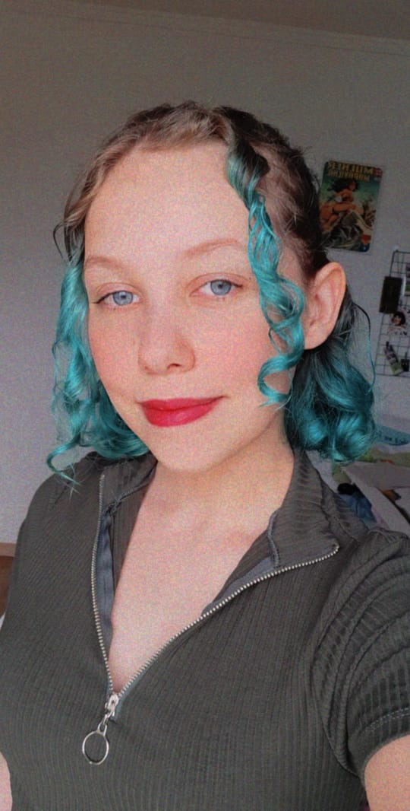

Portifolio de matematica
Autoavaliação
Eu acho que fui uma aluna boa nesse módulo. Como já mencionado, tive todas as minhas tarefas e trabalhos entregues dentro do prazo, com notas acima de 7. Normalmente diria ser uma aluna nota 9, porém, por conta da situação atual do mundo que vivemos, minha média abaixou para 8. Pretendo recompensar os pontos perdidos nas próximas avaliações.
Sim, senti dificuldades. Gosto de quando trabalhos em aula e posso tirar minhas dúvidas na hora. Porém, não possuo tempo para ir aos atendimentos, devido ao grande numero de trabalhos que recebemos por semana. Desse modo, fico com o resumo feito pela professora, o qual me ajuda muito.
Minha melhor forma de estudar é resolvendo exercícios práticos. Por isso, revejo o vídeo disponibilizado no moodle e faço todas as atividades propostas, mesmo que não tenham que ser entregues. Dessa maneira, quando for fazer o trabalho, sei o que fazer em cada questão.
Acredito ter facilidade em conteúdos matemáticos e ter uma mente lógica. Acho que preciso melhorar na minha atenção, pois normalmente é onde acontece os erros, e nas minhas habilidades sociais, pois nem sempre me sinto a vontade para fazer perguntas.
Eu não adoro fazer o portifólio, mas também não detesto. Gosto de escrever, só nem sempre consigo fazer muitos textos de uma vez, me tomando vários dias para poder fazer o tema inteiro. Gostei da proposta desse ano que é de fazer um site também, porém toma mais tempo que o do módulos passados. Acho que o portifólio ajuda a manter o conteúdo na minha cabeça, não esquecendo-o facilmente. Assim, mesmo não sendo a melhor atividade do mundo, acho que seria bom continuar fazendo portifólios.
Sobre os materiais, eu prefiro da maneira que está sendo do que como era antes. Acho as explicações da professora muito esclarecedoras e fáceis de entender. A única coisa que pediria é que trabalhássemos mais com o scratch, já que foi a minha atividade preferida do modulo passado. Tirando isso, não mudaria nada.

Beijos Prof. Valéria, adorei as suas aulas!!
Ana Paula Hartmann 1 ano - 2021
 Introdução
Funções Quadráticas
Funções Modulares
Matemática Financeira
PA e Pag
Auto avaliação
Introdução
Funções Quadráticas
Funções Modulares
Matemática Financeira
PA e Pag
Auto avaliação